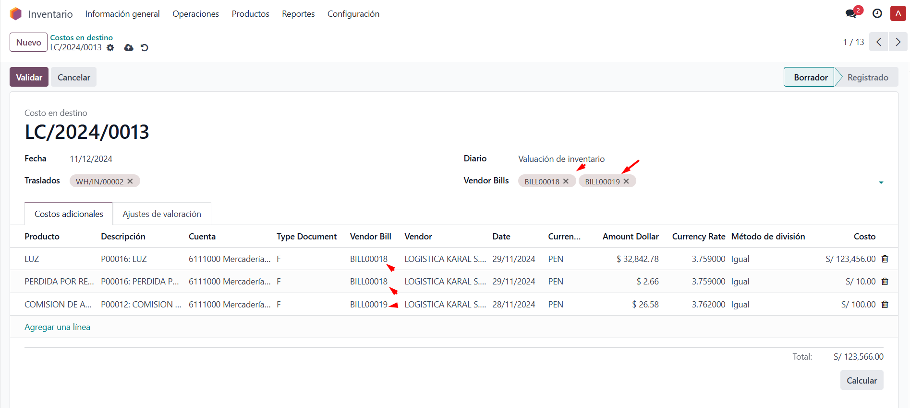
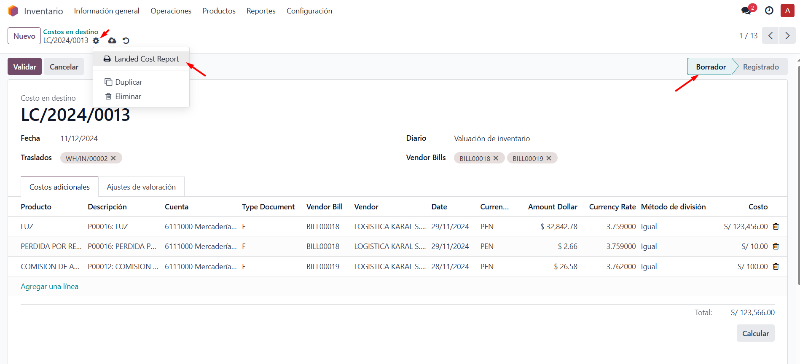
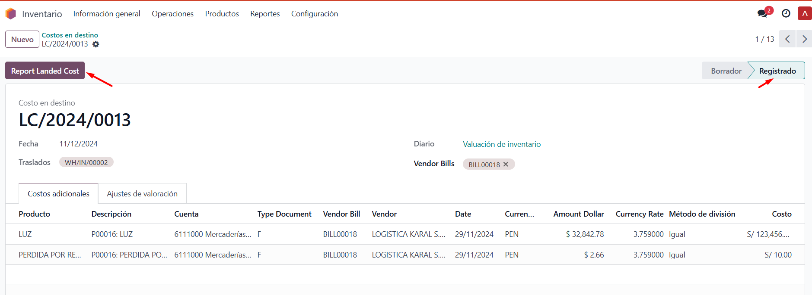

Automate your processes, improve accuracy, and optimize cost management in real-time.
Optimize the destination cost management process with our tool. It allows you to add and remove selected invoice lines directly from the Vendor Bills field. In addition to supporting standard functionality, we also offer an advanced view with key fields such as:

These features will enable you to make financial decisions with greater accuracy and efficiency.
You can quickly and accurately export reports in both PDF and EXCEL format.
The reports include consolidated information on destination costs, making it easier to:
Generate report before validation: Use this option to get a preliminary view.

Generate report after validation: Export the final report once approved.
